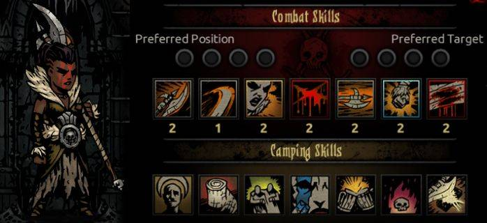

Există 17 clase de eroi în Darkest Dungeon.


Abomination
Abomination este în primul rând un damage-dealer, iar apoi un stunner. El are urmatoarele statusuri la nivelul maxim (6), comparativ cu media:
Din câte se poate observa, are statusuri destul de puternice: printre cele mai bune din joc în ceea ce priveste HP-ul și damage-ul. De asemenea, rezistențele sunt mediocre înspre bune, iar faptul că se poate mișca un spațiu înainte și două înapoi este decent.
Abomination este un erou greu de jucat: în formă umană nu este prea puternic, iar în formă de bestie provoacă stres celorlalți eroi. Cu toate astea, este foarte puternic și-ți oferă un avantaj clar. Pentru a echilibra cele două faze ale lui, folosește-l în majoritatea timpului în formă umană pentru a da stun inamicilor (Manacles), iar când întâmpini o luptă grea, intră în formă de bestie pentru a o putea termina cât mai repede. Tocmai pentru că vrei ca lupta să fie rapidă, nu folosi Rake decât în luptele cu inamici-boss. Slam poate fi folosit pentru mobilitate și așezarea inamicilor într-o ordine convenabilă. Cel mai bine este folosit de pe poziția 2.
Privind abilitățile lui de campare, dacă mai mulți eroi sunt foarte stresați, iar Abomination nu, poți folosi Anger Management, altfel nu-l recomand. Eldrich Blood e un buff destul de puternic, dar cred că aș folosi The Quickening în loc de acesta, pentru că, în formă umană, Abomination are posibilitatea de a da stun, iar dacă mărești șansa să ataci primul cu el la început de rundă, poți avea mult mai mult control asupra inamicilor.
E de menționat că nu poate fi în echipă cu
Antiquarian
Antiquarian e un erou destul de deosebit de restul. Ea are urmatoarele statusuri la nivelul maxim (6), comparativ cu media:
Se observă clar că are statusuri foarte slabe. Nu este puternică pentru că nu e menită să se lupte. În luptă, tot ce poți face cu ea e s-o protejezi și să oferi buff-uri echipei. În schimb, e foarte utilă pentru momentele în care ai nevoie de bani. O să-ți aducă foarte mulți bani și o șansă mai mare de a descoperi camere secrete.
Dintre abilitățile ei, cea mai utilă este Protect Me, pe care o poate folosi pe eroii tank spre a-i oferi buff-uri și a evita pericolul. Heal-ul de pe Fortifying Vapours nu trebuie uitat. Din câte am mai menționat despre importanța heal-ului, se înțelege de ce, mai ales pe un erou nu foarte puternic în luptă, trebuie aleasă abilitatea cu heal. Celelalte abilități pe care ai vrea să le alegi sunt una dintre Nervous Stab și Festering Vapours, și Flashpowder, care poate fi foarte utilă în dezarmarea inamicilor invizibili.
Dintre abilitățile ei pentru campare se remarcă Strange Powers și Curious Incantation, ambele oferind buff-uri foarte puternice pentru un time cost mic.
Arbalest
Arbalest este în primul rând un damage-dealer, iar apoi un healer. Ea are urmatoarele statusuri la nivelul maxim (6), comparativ cu media:
Arbalest are statusuri destul de bune, din câte se observă. Chiar dacă imposibilitatea de a se mișca înainte pare un dezavantaj, ea oricum este mereu jucată de pe ultimele 2 poziții, deci nu ai motive să vrei să înaintezi cu ea/
Dintre abilitățile ei de luptă, mereu aleg Sniper Shot (abilitate de bază pentru a provoca DMG), Blindfire (DMG și buff), Sniper's Mark (foarte utilă împotriva inamicilor cu protecție mare și a inamicilor boss) și Battlefield Bandage (pentru că oricând e nevoie de un heal).
Dintre abilitățile ei pentru campare, Restring Crossbow oferă un buff destul de puternic și e de luat în considerare; Marching Plan e un buff destul de decent, dar de cele mai multe ori îl cedez în favoarea abilităților altor eroi.
Arbalest e una din clasele de preferat în Weald și Warrens și merge foarte bine împreună cu alți eroi ce primesc bonusuri împotriva inamicilor marcați, Bounty Hunter și Houndmaster.
Bounty Hunter
Bounty Hunter este în primul rând un damage-dealer și apoi un stunner. El are urmatoarele statusuri la nivelul maxim (6), comparativ cu media:
Deși pare mediocru, Bounty Hunter e o clasă foarte puternică și utilă. E mobil și consistent în oricare din primele 3 poziții.

Dintre abilitățile de luptă, aproape mereu aleg Collect Bounty (DMG), Finish Him (DMG și mobilitate), Uppercut sau Flashbang (stun) și Mark for Death (foarte utilă împotriva inamicilor cu protecție mare și a inamicilor boss).
Dintre abilitățile pentru campare, Planned Takedown e foarte utilă împotriva inamicilor-boss sau a celor din dungeon-urile de nivel cel puțin veteran, iar Scout Ahead îți oferă un avantaj asupra hărții, ușurându-ți semnificativ misiunea.
Bounty Hunter e unul din eroii mei preferați. Are un set de abilități complex, are utilitate mare, mai ales în Wead și în Warrens, dar are și DMG considerabil și trinket-uri relevante.
Crusader
Crusader este în primul rând un damage-dealer și apoi un stunner. El are urmatoarele statusuri la nivelul maxim (6), comparativ cu media:
Crusader are statusuri foarte puternice, cu exceptția SPD-ului și a mobilității. E una din primele clase de eroi cu care intri în contact, iar din cele 2 posibilități de abordare a setului său de abilități, una ar trebui să fie suficient de ușoară.
Pe de o parte, îl poți juca direct în prima poziție, cu Smite, Zealous Accusation, Stunning Blow și Inspiring Cry (de preferat) sau Battle Heal. Pe de altă parte, înlocuirea heal-ului sau a Zealous Accusation (de preferat) cu Holy Lance, produce o schimbare masivă, transformând radical acest erou care, în aparență, se prezintă ca imobil. Această abilitate îți oferă un avantaj deosebit și e folosită adesea chiar în prima misiune din Darkest Dungeon.
Ca abilitate de campare, cea mai importantă este Zealous Vigil, iar Zealous Speech și Stand Tall sunt foarte utile, de asemenea, pentru a reduce stresul echipei.
Fiind un erou religios, este foarte potrivit pentru Ruins și, de asemenea, e unul din eroii esențiali pentru prima misiune din Darkest Dungeon.
Flagellant
Flagellant este folosit în mare parte pentru bleed, fiind un damage-dealer. El are urmatoarele statusuri la nivelul maxim (6), comparativ cu media:
Flagellant are statusuri mediocre în ceea ce privește atacul, dar are rezistențe bune.
Dintre abilitățile de luptă, mereu aleg Punish, Further levels (pentru a ajunge la ultimele poziții), Exsanguinate (sursă puternică de DMG și heal) și Redeem (heal puternic pentru sine și încă un erou).
Dintre abilitățile pentru campare, Lash's Kiss e destul de utilă, iar Lash's Cure e foarte folositoare pentru economisirea timpului și a banilor în Hamlet, pentru a vindeva o boală.
Flagellant e potrivit pentru Weald și Warrens datorită bleed-ului, dar poate fi jucat și în Farmstead sau Courtyard.
Grave Robber
Grave Robber este un damage-dealer mobil. Ea are urmatoarele statusuri la nivelul maxim (6), comparativ cu media:
Deși pare să aibă statusuri foarte bune datorită mobilității și a SPD-ului mare, SPD-ul poate fi privit și ca un dezavantaj deoarece are puțin HP, iar unul din lucrurile care se întâmplă des este ca un erou să moară din cauza efectelor de bleed sau blight înainte să apuce să primească un heal. În schimbul acestui risc, mereu e de preferat mai mult HP în locul DODGE-ului.
Grave Robber poate fi jucată în multe feluri, în funcție de gradul de mobilitate de care vrei să te folosești. O metodă bună pentru luptele lungi este să o plasezi în poziția a doua, de unde, în prima rundă, se va face invizibilă cu Shadow Fade, urmând să folosească Lunge în a doua rundă, provocând DMG masiv. Celelalte două abilități pe care le folosesc sunt Pick to the Face și Thrown Dagger.
Dintre abilitățile de campare, e de remarcat Snuff Box, prin care poți vindeca de o boală atât pe ea, cât și un alt erou, economisind timp și bani în Hamlet.
Hellion
Hellion e în primul rând un damage-dealer, iar apoi un stunner. Ea are urmatoarele statusuri la nivelul maxim (6), comparativ cu media:

Hellion are statusuri foarte puternice, din toate punctele de vedere. Lipsa de mobilitate poate fi compensată de Breakthrough.
Abilitățile ei sunt puternice, bazându-se pe DMG direct. Mai mereu o folosesc în prima poziție cu Wicked Hack, Iron Swan, Barbaric YAWP! și Adrenaline Rush. Dacă sunt în Weald sau Warrens, înlocuiesc Adrenaline Rush cu If It Bleeds.
Dintre ablitățile de campare, Battle Trance și Sharpen Spear oferă buff-uri puternice și uneori le folosesc pe amândouă.
Posibil cea mai bună clasă din joc, Hellion e un erou deosebit de puternic, pe care te poți baza oriunde.
Highwayman
Highwayman e un damage-dealer. El are urmatoarele statusuri la nivelul maxim (6), comparativ cu media:
Are statusuri foarte puternice, neducând lipsă de nimic.
Highwayman are o serie de abilități de la distanță și o alta cu abilități de aproape. Cele de aproape sunt relativ mai puternice, deși buff-urile de pe trinket-urile specifice lui îl dezavantajează în această privință. Pe de altă parte, poate fi jucat cu trinket-uri generale. Astfel, eu prefer să mă folosesc de mobilitatea lui, prin Duelist's Advance, Wicked Slice (foarte mult DMG), Pistol Shot și Grape Shot sau Tracking Shot.
Dintre abilitățile de campare, absolut necesară este Bandit's Sense pentru a preveni vreo posibilă ambuscadă.
În ciuda trinket-urilor dezavantajoase, Highwayman, ca și Hellion, se poate juca oriunde.
Houndmaster
Houndmaster e în primul rând un stunner, apoi un tank. El are urmatoarele statusuri la nivelul maxim (6), comparativ cu media:
Din câte se poate observa, Houndmaster are statusuri foarte puternice, care-i conferă stabilitate.
Dintre abilitățile lui, aproape mereu folosesc Hound's Rush (DMG + bleed), Blackjack (stun), Cry Havoc (stress heal) și Guard Dog (guard).
Dintre abilitățile de campare, esențială e Hound's Watch pentru a preveni vreo posibilă ambuscadă.
Jester
Jester e în primul rând un stress healer, iar apoi un damage-dealer.
El are urmatoarele statusuri la nivelul maxim (6), comparativ cu media:Jester, ca și Grave Robber, are aceeași combinație de SPD și Dodge, dar puțin HP, ceea ce nu e convenabil. Pe deasupra, are și rezistențe mai slabe.
Pentru a-l folosi în cel mai utilitar mod, îl păstrez mereu pe poziția 3, pentru a folosi Inspiring Tune, Battle Ballad, Slice Off și Harvest.
Are abilități de campare foarte bune pentru reducerea stresului: Tiger's Eye, Turn Back Time.
Deși pare slab, pentru utilitatea lui, e unul din eroii cel mai des folosiți.
Leper
Leper e un damage-dealer. El are urmatoarele statusuri la nivelul maxim (6), comparativ cu media:
Are cel mai mare DMG din joc, dar îi lipsesc viteza și mobilitatea cu desăvârșire.
Deși în aparență puternic, imobilitatea și imposibiltatea de a ajunge la ultimele poziții îl fac, de fapt, inutil, iar DMG-ul mult e eclipsat de acuratețea mică. Cu toate acestea, cu trinket-uri potrivite și o echipă ce poate avea control asupra ordinii inamicilor, poate fi chiar de temut.
Dintre abilitățile de campare, foarte bune sunt Let the Mask Down și Reflection.
Man-at-Arms
Man-at-Arms e în primul rând un tank, iar apoi un stunner. El are urmatoarele statusuri la nivelul maxim (6), comparativ cu media:
Man-at-Arms este un alt erou cu statusuri foarte puternice și un set de abilități utile.

Dintre abilitățile de luptă, Crush, Rampart și Defender sunt cele mai importante, urmate îndeaproape de buff-urile lui și de Retribution.
Dintre abilitățile de campare, Tactics și Weapon Practice sunt cele mai bune pentru că afectează întreaga echipă, dar nici celelalte nu sunt de lăsat.
De departe una din cele mai bune clase, Man-at-Arms este util aproape peste tot și e mereu un erou pe care te poți baza în misiunile grele.
Occultist
Occultist e în primul rând un healer, iar apoi un damage-dealer. El are urmatoarele statusuri la nivelul maxim (6), comparativ cu media:
Deși puternic în mare parte, aceeași combinație de SPD și Dodge, dar puțin HP îi poate fi fatală.
Dintre abilitățile de luptă, heal-ul Wyrd Reconstruction e cel mai important, debuff-urile pot fi foarte utile împotriva inamicilor mai periculoși din dungeon-urile de nivel veteran. De asemenea, Abyssal Artillery e foarte bună pentru a ajunge la ultimele poziții inamice.
Dintre abilitățile de campare, cea mai importantă e Unspeakable Commune, pentru a preveni vreo posibilă ambuscadă.
Occultist e o clasă cu mult potențial, folosită adesea în Cove și Darkest Dungeon, dar foarte imprevizibilă.
Plague Doctor
Plague Doctor se bazează pe blight, iar apoi e un stunner. Ea are urmatoarele statusuri la nivelul maxim (6), comparativ cu media:
Deși are rezistențe slabe, se poate feri de inamici, în ultimele poziții, și prin ținerea sub stun a celor ce-o pot ajunge.
Dintre abilitățile de luptă, mereu aleg Plague Grenade, Noxious Blast, Blinding Gas și Battlefield Medicine.
Dintre abilitățile de campare, Leeches și The Cure sunt folositoare pentru vindecarea bolilor și economisirea timpului și banilor în Hamlet.
Plague Doctor este un erou foarte puternic, blight-ul fiind o armă letală în dungeon-urile în care inamicii au rezistențe mici la acesta, cum ar fi Ruins și Cove.
Shieldbreaker
Shieldbreaker e un damage dealer. Ea are urmatoarele statusuri la nivelul maxim (6), comparativ cu media:
Deși puternică în mare parte, aceeași combinație de SPD și Dodge, dar puțin HP îi poate fi fatală. Totuși, Serpent Sway., o poate ajuta, ținând-o departe de DMG direct.
Dintre abilitățile de luptă, folosesc Pierce (armor piercing), Adder's Kiss, Captivate și Serpent Sway..
Dintre abilitățile de campare, cea mai bună e Snake Skin, pentru a avea mai multă stabilitate.
La fel ca și Plague Doctor, e foarte potrivită în Ruins și Cove, alternând între prima și a doua poziție. Shieldbreaker are parte de niște coșmaruri în timpul campării, adică lupte tratate ca o ambuscadă, în care are asupra sa un efect de horror incurabil de +20 stres pe rundă. Acestea sunt în număr de 7, fiind adunate de la toții eroii Shieldbreaker din Roster.
Vestal
Vestal e în primul rând un healer, iar apoi un stunner. Ea are urmatoarele statusuri la nivelul maxim (6), comparativ cu media:
Are statusuri puternice, dar ce o încurcă cel mai mult e mobilitatea scăzută.
Divine Comfort e de departe cea mai bună abilitate din joc, ea putând să salveze de la Death Door o echipă întreagă. Pe lângă aceasta, celelalte trei abilități folosite sunt Divine Grace, Dazzling Light și Judgement.
Dintre abilitățile de campare, esențială e Sanctuary, pentru a preveni vreo posibilă ambuscadă.
Vestal e clasa pe care o vei avea cel mai des în Roster, fiind cel mai consistent healer, util oriunde.